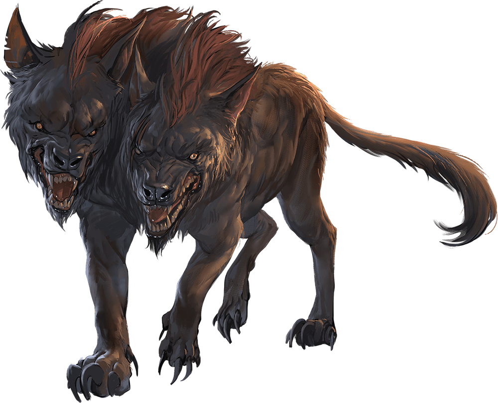
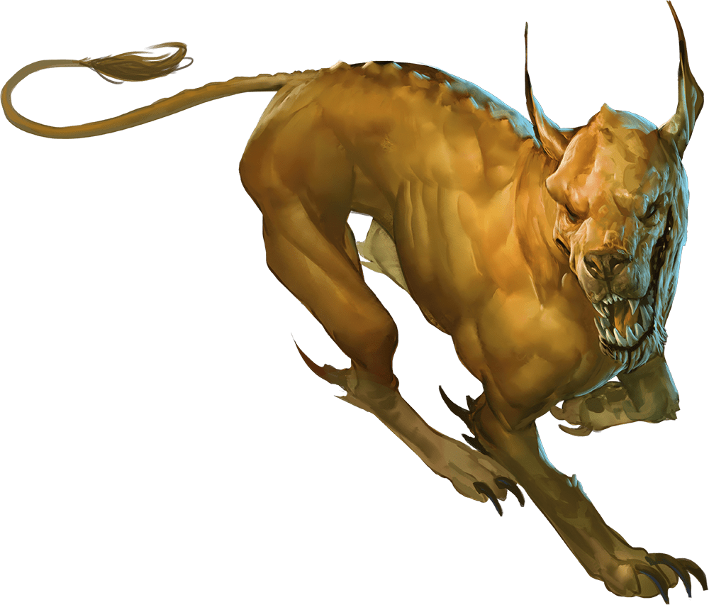
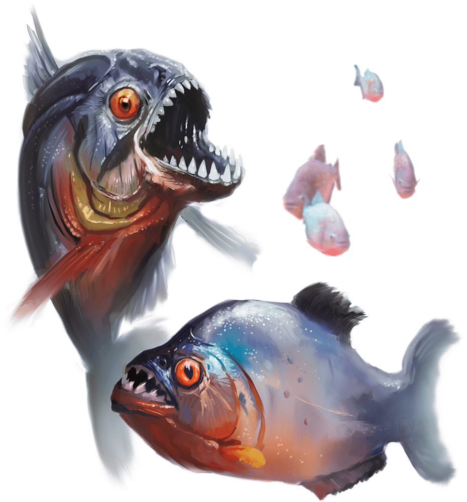
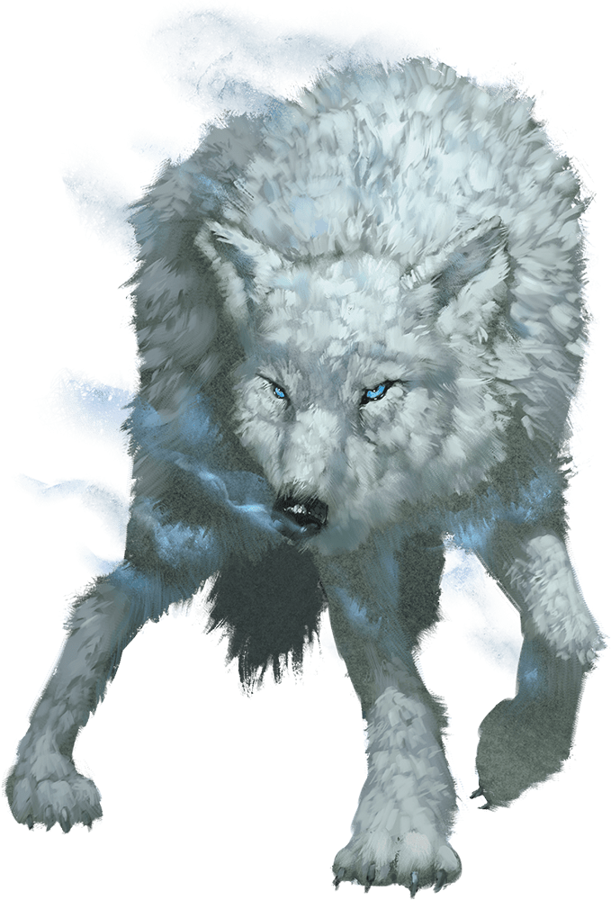
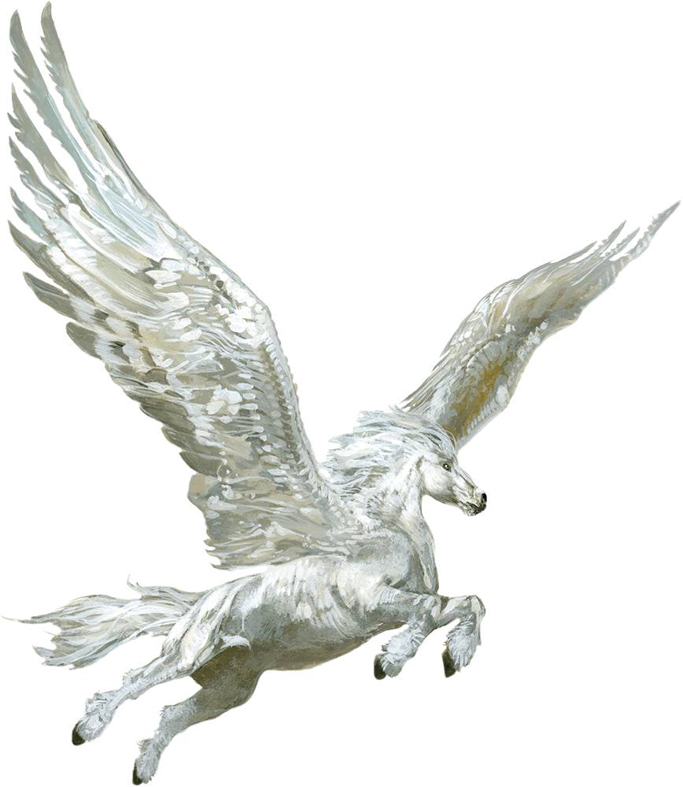
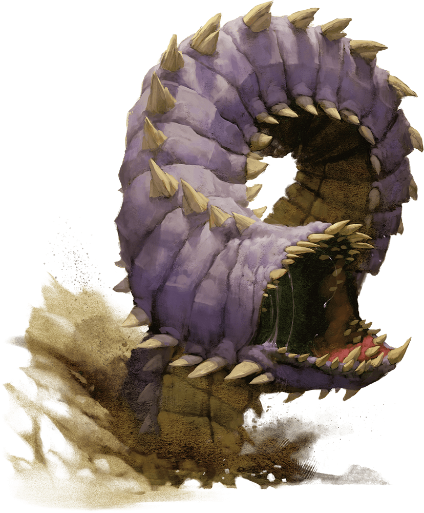

Animais
Esse apêndice contém as estatísticas de vários animais, insetos e outros bichos. Os blocos de estatísticas estão organizados em ordem alfabética pelo nome da criatura.
Abutre
| Besta Média | imparcial | ||||
| Classe de Armadura | Pontos de Vida | Deslocamento | |||
|---|---|---|---|---|---|
| 10 | 5(1d8+1) | 3m | voo 15m | ||
| Perícias | Sentidos | Idiomas | Nível de Desafio | ||
| Percepção +3 | Percepção Passiva 13 | Nenhum | 0(10xp) | ||
| Força (FOR) | Destreza (DES) | Constituição (CON) | Inteligência (INT) | Sabedoria (SAB) | Carisma (CAR) |
| 7(-2) | 10(+0) | 13(+1) | 2(-4) | 12(+1) | 4(-3) |
| Visão e Faro | O abutre tem vantagem em testes de Sabedoria (Percepção) relacionados à visão e ao olfato. | ||||
| Táticas de Matilha | O abutre tem vantagem nas jogadas de ataque contra uma criatura se, pelo menos, um dos aliados do abutre estiver a 1,5 metro da criaturas e não estiver incapacitado. | ||||
| Ações | |||||
| Bicada | Ataque Corpo-a-Corpo com Arma: +2 para atingir, alcance 1,5 m, um alvo. Acerto: 2 (1d4) de dano perfurante. | ||||
Abutre Gigante
Um abutre gigante possui uma inteligência avançada e uma inclinação malévola. Diferente de sua espécime menor, ele irá atacar uma criatura ferida apressar seu fim. Os abutres gigantes são conhecidos por assombrar criaturas sedentas e famintas por dias, divertindo-se com o sofrimento delas.
| Besta Grande | Neutro e Mau | ||||
| Classe de Armadura | Pontos de Vida | Deslocamento | |||
|---|---|---|---|---|---|
| 10 | 22(3d10+6) | 3m | voo 18m | ||
| Perícias | Sentidos | Idiomas | Nível de Desafio | ||
| Percepção +3 | Percepção Passiva 13 | Coompreende Comum, mas não fala | 1(200xp) | ||
| Força (FOR) | Destreza (DES) | Constituição (CON) | Inteligência (INT) | Sabedoria (SAB) | Carisma (CAR) |
| 15(+2) | 10(+0) | 15(+2) | 6(-2) | 12(+1) | 7(-2) |
| Visão e Faro Aguçados | O abutre tem vantagem em testes de Sabedoria (Percepção) relacionados à visão e ao olfato. | ||||
| Táticas de Matilha | O abutre tem vantagem nas jogadas de ataque contra uma criatura se, pelo menos, um dos aliados do abutre estiver a 1,5 metro da criaturas e não estiver incapacitado. | ||||
| Ações | |||||
| Ataques Múltiplos | O Abutre realiza dois ataques: um com sua bicada e um com suas garras. | ||||
| Bicada | Ataque Corpo-a-Corpo com Arma: +4 para atingir, alcance 1,5 m, um alvo. Acerto: 7 (2d4+2) de dano perfurante. | ||||
| Garras | Ataque Corpo-a-Corpo com Arma: +4 para atingir, alcance 1,5 m, um alvo. Acerto: 9 (2d6 + 2) de dano cortante. | ||||
Águia
| Besta Pequena | imparcial |  | |||
| Classe de Armadura | Pontos de Vida | Deslocamento | |||
|---|---|---|---|---|---|
| 12 | 3 (1d6) | 3m | voo 18m | ||
| Perícias | Sentidos | Idiomas | Nível de Desafio | ||
| Percepção +4 | Percepção Passiva 14 | Nenhum | 0(10xp) | ||
| Força (FOR) | Destreza (DES) | Constituição (CON) | Inteligência (INT) | Sabedoria (SAB) | Carisma (CAR) |
| 4(-2) | 15(+2) | 10 (+0) | 2(-4) | 14 (+2) | 7 (–2) |
| Visão Aguçada | A águia tem vantagem em testes de Sabedoria (Percepção) relacionados à visão. | ||||
| Ações | |||||
| Garras | Ataque Corpo-a-Corpo com Arma: +4 para atingir, alcance 1,5 m, um alvo. Acerto: 4 (1d4 + 2) de dano cortante. | ||||
Águia Gigante
Uma águia gigante é uma criatura nobre que fala seu próprio idioma e compreende os dialetos da língua Comum. Um casal formado de águias gigantes tem até quatro ovos ou filhotes em seu ninho (trate os filhotes como águias normais).
| Besta Média | imparcial | | |||
| Classe de Armadura | Pontos de Vida | Deslocamento | |||
|---|---|---|---|---|---|
| 13 | 26 (4d10 + 4) | 3m | voo 24m | ||
| Perícias | Sentidos | Idiomas | Nível de Desafio | ||
| Percepção +4 | Percepção Passiva 14 | Águia Gigante, compreende Comum e Auran, mas não pode falar | 1(200xp) | ||
| Força (FOR) | Destreza (DES) | Constituição (CON) | Inteligência (INT) | Sabedoria (SAB) | Carisma (CAR) |
| 16 (+3) | 17 (+3) | 13 (+1) | 8 (–1) | 14 (+2) | 10 (+0) |
| Visão Aguçada | A águia tem vantagem em testes de Sabedoria (Percepção) relacionados à visão. | ||||
| Ações | |||||
| Ataques Múltiplos | A águia realiza dois ataques: um com sua bicada e um com suas garras. | ||||
| Bicada | Ataque Corpo-a-Corpo com Arma: +5 para atingir, alcance 1,5 m, um alvo. Acerto: 6 (1d6 + 3) de dano perfurante. | ||||
| Garras | Ataque Corpo-a-Corpo com Arma: +5 para atingir, alcance 1,5 m, um alvo. Acerto: 10 (2d6 + 3) de dano cortante. | ||||
Aranha
| Besta Pequena | imparcial | ||||
| Classe de Armadura | Pontos de Vida | Deslocamento | |||
|---|---|---|---|---|---|
| 12 | 1(1d4-1) | 6m | escalada 6m | ||
| Perícias | Sentidos | Idiomas | Nível de Desafio | ||
| Furtividade +4 | visão no escuro 18 m Percepção passiva 10 | Nenhum | 0(10xp) | ||
| Força (FOR) | Destreza (DES) | Constituição (CON) | Inteligência (INT) | Sabedoria (SAB) | Carisma (CAR) |
| 2(-4) | 14(+2) | 8(-1) | 1(-5) | 10(+0) | 2(-4) |
| Escalada Aracnídea | A aranha pode escalar superfícies difíceis, incluindo tetos de cabeça para baixo, sem precisar realizar um teste de habilidade. | ||||
| Sentido na Teia | Quando em contato com uma teia, a aranha sabe a localização exata de qualquer outra criatura em contato com a mesma teia. | ||||
| Andar na Teia | A aranha ignora restrições de movimento causadas por estar numa teia. | ||||
| Ações | |||||
| Mordida | Ataque Corpo-a-Corpo com Arma: +4 para atingir, alcance 1,5 m, uma criatura. Acerto: 1 de dano perfurante e o alvo deve ser bem sucedido num teste de resistência de Constituição CD 9 ou sofrerá 2 (1d4) de dano de veneno. | ||||
Aranha Gigante
Para apanhar sua presa, uma aranha gigante cria teias elaboradas ou dispara fios pegajosos de teia de seu abdômen. As aranhas gigantes são mais comumente encontradas no subterrâneo, fazendo seus covis em tetos ou em fendas escuras cheias de teias. Tais covis estão, frequentemente, infestados de casulos prendendo vítimas anteriores.
| Besta Grande | imparcial | ||||
| Classe de Armadura | Pontos de Vida | Deslocamento | |||
|---|---|---|---|---|---|
| 14 (Armadura Natural) | 26 (4d10 + 4) | 9m | escalada 9m | ||
| Perícias | Sentidos | Idiomas | Nível de Desafio | ||
| Furtividade +7 | percepção às cegas 3 m visão no escuro 18 m Percepção passiva 10 | Nenhum | 1(200xp) | ||
| Força (FOR) | Destreza (DES) | Constituição (CON) | Inteligência (INT) | Sabedoria (SAB) | Carisma (CAR) |
| 14 (+2) | 16 (+3) | 12 (+1) | 2(-4) | 11 (+0) | 4(-3) |
| Escalada Aracnídea | A aranha pode escalar superfícies difíceis, incluindo tetos de cabeça para baixo, sem precisar realizar um teste de habilidade. | ||||
| Sentido na Teia | Quando em contato com uma teia, a aranha sabe a localização exata de qualquer outra criatura em contato com a mesma teia. | ||||
| Andar na Teia | A aranha ignora restrições de movimento causadas por estar numa teia. | ||||
| Ações | |||||
| Mordida | Ataque Corpo-a-Corpo com Arma: +5 para atingir, alcance 1,5 m, uma criatura. Acerto: 7 (1d8 + 3) de dano perfurante e o alvo deve realizar um teste de resistência de Constituição CD 11, sofrendo 9 (2d8) de dano de veneno se falhar na resistência ou metade desse dano se obtiver sucesso. Se o dano de veneno reduzir o alvo a 0 pontos de vida, o alvo estará estável, porém, envenenado, por 1 hora e paralisado enquanto estiver envenenado dessa forma. | ||||
| Teia (Recarrega 5–6) | Ataque à Distância com Arma: +5 para atingir, alcance 9 m/ 18 m, uma criatura. Acerto: O alvo ficará impedido pela teia. Com uma ação, o alvo impedido pode realizar um teste de Força CD 12, rompendo a teia com sucesso. A teia também pode ser atacada e destruída (CA 10; 5 pv; vulnerabilidade a fogo; imune a dano de concussão, veneno e psíquico). | ||||
Aranha Interplanar
Uma aranha interplanar possui a habilidade mágica de entrar e sair do Plano Etéreo. Ela parece surgir de lugar nenhum e, rapidamente desaparece após atacar. Ela se movimenta no Plano Etéreo antes de voltar para o Plano Material, fazendo parecer que ela pode se teletransportar.
| Monstruosidade Grande | imparcial |  | |||
| Classe de Armadura | Pontos de Vida | Deslocamento | |||
|---|---|---|---|---|---|
| 13 (Armadura Natural) | 32 (5d10 + 5) | 9m | escalada 9m | ||
| Perícias | Sentidos | Idiomas | Nível de Desafio | ||
| Furtividade +6 | visão no escuro 18 m Percepção passiva 10 | Nenhum | 3(700xp) | ||
| Força (FOR) | Destreza (DES) | Constituição (CON) | Inteligência (INT) | Sabedoria (SAB) | Carisma (CAR) |
| 15 (+2) | 16 (+3) | 12 (+1) | 6 (–2) | 10 (+0) | 6 (–2) |
| Escalada Aracnídea | A aranha pode escalar superfícies difíceis, incluindo tetos de cabeça para baixo, sem precisar realizar um teste de habilidade. | ||||
| Salto Etéreo | Com uma ação bônus, a aranha pode, magicamente, mudar do Plano Material para o Plano Etéreo, ou vice-versa. | ||||
| Andar na Teia | A aranha ignora restrições de movimento causadas por estar numa teia. | ||||
| Ações | |||||
| Mordida | Ataque Corpo-a-Corpo com Arma: +4 para atingir, alcance 1,5 m, uma criatura. Acerto: 7 (1d10 + 2) de dano perfurante e o alvo deve realizar um teste de resistência de Constituição CD 11, sofrendo 18 (4d8) de dano de veneno se falhar na resistência ou metade desse dano se obtiver sucesso. Se o dano de veneno reduzir o alvo a 0 pontos de vida, o alvo estará estável, porém, envenenado, por 1 hora e paralisado enquanto estiver envenenado dessa forma. | ||||
Cão da Morte
O cão da morte é um cão horrendo de duas cabeças que vaga por planícies, desertos e pelo Subterrâneo. O ódio queima no coração de um cão da morte e o gosto pela carne humanoide o leva a atacar viajantes e exploradores. A saliva do cão da morte carrega uma doença medonha que faz com que a carne da vítima apodreça lentamente, soltando-se dos ossos.
| Monstruosidade Média | Neutro e Mau |  | |||
| Classe de Armadura | Pontos de Vida | Deslocamento | |||
|---|---|---|---|---|---|
| 12 | 39 (6d8 + 12) | 12m | - | ||
| Perícias | Sentidos | Idiomas | Nível de Desafio | ||
| Furtividade +4 Percepção +5 | visão no escuro 36m Percepção passiva 15 | Nenhum | 1(200xp) | ||
| Força (FOR) | Destreza (DES) | Constituição (CON) | Inteligência (INT) | Sabedoria (SAB) | Carisma (CAR) |
| 15 (+2) | 14 (+2) | 14 (+2) | 3 (–4) | 13 (+1) | 6 (–2) |
| Duas Cabeças | O cão tem vantagem e testes de Sabedoria (Percepção) e em testes de resistência contra ser amedrontado, atordoado, cegado, enfeitiçado, ensurdecido ou derrubado inconsciente. | ||||
| Ações | |||||
| Ataques Múltiplos | O cão realiza dois ataques de mordida. | ||||
| Mordida | Ataque Corpo-a-Corpo com Arma: +4 para atingir, alcance 1,5 m, um alvo. Acerto: 5 (1d6 + 2) de dano perfurante. Se o alvo for uma criatura, ele deve ser bem sucedido num teste de resistência de Constituição CD 12 contra doença, ou ficará envenenado até a doença ser curada. A cada 24 horas passadas, a criatura deve repetir o teste de resistência, reduzindo seu máximo de pontos de vida em 5 (1d10) se fracassar. Essa redução dura até a doença ser curada. A criatura morre se a doença reduzir seu máximo de pontos de vida a 0. | ||||
Cão Infernal
Corruptores monstruosos cuspidores de fogo que tomaram a forma de cachorros, cães infernais são encontrados nos campos de batalha de Aqueronte e por todos os Planos Inferiores. No Plano Material, os cães infernais são vistos com mais frequência a serviço de diabos, gigantes do fogo e outras criaturas malignas que os utilizam como animais de guarda e companheiros.
Fome Abrasadora. Cães infernais caçam em matilhas, alimentando-se de qualquer criatura que pareça comestível. Eles evitam oponentes potencialmente perigosos preferindo se focar em presas mais fracas com suas mordidas ferozes e hálito flamejante, demonstrando uma determinação incansável enquanto perseguem sua presa até seu amargo fim.
Quando os cães infernais se alimentam, a carne que eles consomem alimenta o fogo infernal que queima dentro deles. Quando um cão infernal morre, o fogo consome os restos da criatura em uma erupção de fumaça esvoaçante e de brasas ardentes, não deixando nada para trás além de tufos chamuscados de pelo negro.
Maligno ao Extremo. Cães infernais são mais espertos que as bestas mundanas e sua natureza leal torna-os ótimos para seguir ordens. No entanto, a disposição ao mal de um cão infernal significa que a criatura não pode ser treinada para mais nada além de um assassino implacável.
Se um cão infernal não tiver permissão de praticar sua fome malévola, ele rapidamente abandona ou volta-se contra seu mestre.
| Corruptor Médio | Leal e Mau | ||||
| Classe de Armadura | Pontos de Vida | Deslocamento | |||
|---|---|---|---|---|---|
| 15 (Armadura Natural) | 45 (7d8 + 14) | 15m | - | ||
| Perícias | Sentidos | Idiomas | Nível de Desafio | ||
| Percepção +5 Imunidade a Dano fogo | visão no escuro 18 m Percepção passiva 15 | compreende Infernal mas não pode falar | 3(700xp) | ||
| Força (FOR) | Destreza (DES) | Constituição (CON) | Inteligência (INT) | Sabedoria (SAB) | Carisma (CAR) |
| 17 (+3) | 12 (+1) | 14 (+2) | 6 (–2) | 13 (+1) | 6 (–2) |
| Audição e Faro Aguçados | O cão tem vantagem em testes de Sabedoria (Percepção) relacionados à audição e ao olfato. | ||||
| Táticas de Matilha | O cão tem vantagem nas jogadas de ataque contra uma criatura se, pelo menos, um dos aliados do cão estiver a 1,5 metro da criaturas e não estiver incapacitado. | ||||
| Ações | |||||
| Mordida | Ataque Corpo-a-Corpo com Arma: +5 para atingir, alcance 1,5 m, um alvo. Acerto: 7 (1d8 + 3) de dano perfurante mais 7 (2d6) de dano de fogo. | ||||
| Sopro de Fogo (Recarrega 5–6) | O cão expele fogo num cone de 4,5 metros. Cada criatura na área deve realizar um teste de resistência de Destreza CD 12, sofrendo 21 (6d6) de dano de fogo se falhar na resistência, ou metade desse dano se obtiver sucesso. | ||||
Cão Teleportador
Um cão teleportador recebe esse nome por causa da habilidade de piscar para dentro e para fora da existência, um talento usado para ajudá-lo a atacar e evitar se ferir. Os cães teleportadores nutrem um ódio antigo pelas panteras deslocadoras e as atacam a primeira vista.
| Fada Média | Leal e Bom |  | |||
| Classe de Armadura | Pontos de Vida | Deslocamento | |||
|---|---|---|---|---|---|
| 13 | 22 (4d8 + 4) | 12m | - | ||
| Perícias | Sentidos | Idiomas | Nível de Desafio | ||
| Furtividade +5 Percepção +3 | Percepção passiva 13 | Cão Teleportador, compreende Silvestre, mas não pode falar | 1/4 (50 XP) | ||
| Força (FOR) | Destreza (DES) | Constituição (CON) | Inteligência (INT) | Sabedoria (SAB) | Carisma (CAR) |
| 12 (+1) | 17 (+3) | 12 (+1) | 10 (+0) | 13 (+1) | 11 (+0) |
| Audição e Faro Aguçados | O cão tem vantagem em testes de Sabedoria (Percepção) relacionados à audição e ao olfato. | ||||
| Ações | |||||
| Mordida | Ataque Corpo-a-Corpo com Arma: +3 para atingir, alcance 1,5 m, um alvo. Acerto: 4 (1d6 + 1) de dano perfurante. | ||||
| Teletransporte | O cão teletransporta-se magicamente, juntamente com qualquer equipamento que ele esteja vestindo ou carregando, para um espaço desocupado, a até 12 metros, que ele possa ver. | ||||
Centopéia Gigante
| Besta Pequena | Imparcial | ||||
| Classe de Armadura | Pontos de Vida | Deslocamento | |||
|---|---|---|---|---|---|
| 13 (Armadura Natural) | 4 (1d6 + 1) | 9m | Escalada 9m | ||
| Perícias | Sentidos | Idiomas | Nível de Desafio | ||
| - | Percepção às cegas 9m Percepção passiva 8 | - | 1/4 (50 XP) | ||
| Força (FOR) | Destreza (DES) | Constituição (CON) | Inteligência (INT) | Sabedoria (SAB) | Carisma (CAR) |
| 5 (–3) | 14 (+2) | 12 (+1) | 1 (-5) | 7 (-2) | 3 (-4) |
| Ações | |||||
| Mordida | Ataque Corpo-a-Corpo com Arma: +4 para atingir, alcance 1,5 m, uma criatura. Acerto: 4 (1d4 + 2) de dano perfurante e o alvo deve ser bem sucedido num teste de resistência de Constituição CD 11 ou sofrerá 10 (3d6) de dano de veneno. Se o veneno reduzir os pontos de vida do alvo a 0, ele fica estável mas envenenado por 1 hora, mesmo após recuperar pontos de vida, e fica paralisado enquanto estiver envenenado dessa forma. | ||||
Enxame de Insetos
| Enxame Médio de bestas pequenas | Imparcial | ||||
| Classe de Armadura | Pontos de Vida | Deslocamento | |||
|---|---|---|---|---|---|
| 12 | 22 (5d8) | 6m | Escalada 6m | ||
| Resistência a Dano | Imunidade a Condição | Sentidos | Nível de Desafio | ||
| Concussão, cortante, perfurante | Agarrado, amedrontado, atordoado, caído, enfeitiçado, impedido, paralisado, petrificado | Percepção às cegas 3m, Percepção passiva 8 | 1/2 (100 XP) | ||
| Força (FOR) | Destreza (DES) | Constituição (CON) | Inteligência (INT) | Sabedoria (SAB) | Carisma (CAR) |
| 3 (–4) | 13 (+1) | 10 (+0) | 1 (–5) | 7 (–2) | 1 (–5) |
| Enxame | O enxame pode ocupar o espaço de outra criatura e vice-versa, e o enxame pode se mover através de qualquer abertura grande o suficiente para um inseto Miúdo. O enxame não pode recuperar pontos de vida ou ganhar pontos de vida temporários. | ||||
| Ações | |||||
| Mordidas | Ataque Corpo-a-Corpo com Arma: +3 para atingir, alcance 0 m, um alvo no espaço do enxame. Acerto: 10 (4d4) de dano perfurante, ou 5 (2d4) de dano perfurante se o enxame estiver com metade de seus pontos de vida ou menos. | ||||
VARIAÇÃO: ENXAME DE INSETOS
Diferentes tipos de insetos podem se juntar em enxames e cada enxame possui as características especiais descritas abaixo.
Enxame de Aranhas. Um enxame de aranhas possui os seguintes traços adicionais.
Andar na Teia. O enxame ignora restrições de movimento causadas por estar numa teia.
Escalada Aracnídea. O enxame pode escalar superfícies difíceis, incluindo tetos de cabeça para baixo, sem precisar realizar um teste de habilidade.
Sentido na Teia. Quando em contato com uma teia, o enxame
sabe a localização exata de qualquer outra criatura em contato com a mesma teia.
Enxame de Besouros. Um enxame de besouros ganha deslocamento de escavação de 1,5 metro.
Enxame de Centopeias. Uma criatura reduzida a 0 pontos de vida por um enxame de centopeias fica estável, mas envenenado por 1 hora, mesmo depois de recuperar pontos de vida, e paralisado enquanto estiver envenenado dessa forma.
Enxame de Vespas. Um enxame de vespas tem deslocamento de caminhada de 1,5 metro, deslocamento de voo de 9 m e nenhum deslocamento de escalada.
Enxame de Morcegos
| Enxame Médio de bestas pequenas | Imparcial | ||||
| Classe de Armadura | Pontos de Vida | Deslocamento | |||
|---|---|---|---|---|---|
| 12 | 22 (5d8) | 0m | voo 9m | ||
| Resistência a Dano | Imunidade a Condição | Sentidos | Nível de Desafio | ||
| Concussão, cortante, perfurante | Agarrado, amedrontado, atordoado, caído, enfeitiçado, impedido, paralisado, petrificado | Percepção às cegas 18m, Percepção passiva 11 | 1/4 (50 XP) | ||
| Força (FOR) | Destreza (DES) | Constituição (CON) | Inteligência (INT) | Sabedoria (SAB) | Carisma (CAR) |
| 12 (+1) | 17 (+3) | 12 (+1) | 10 (+0) | 13 (+1) | 11 (+0) |
| Eco Localização | Enquanto não puder ouvir, o enxame perderá a percepção às cegas. | ||||
| Audição Aguçada | O enxame tem vantagem em testes de Sabedoria (Percepção) relacionados à audição. | ||||
| Enxame | O enxame pode ocupar o espaço de outra criatura e vice-versa, e o enxame pode se mover através de qualquer abertura grande o suficiente para um morcego Miúdo. O enxame não pode recuperar pontos de vida ou ganhar pontos de vida temporários. | ||||
| Ações | |||||
| Mordidas | Ataque Corpo-a-Corpo com Arma: +4 para atingir, alcance 0 m, uma criatura no espaço do enxame. Acerto: 5 (2d4) de dano perfurante, ou 2 (1d4) de dano perfurante se o enxame estiver com metade de seus pontos de vida ou menos. | ||||
Enxame de Piranhas
| Enxame Médio de bestas pequenas | Imparcial |  | |||
| Classe de Armadura | Pontos de Vida | Deslocamento | |||
|---|---|---|---|---|---|
| 13 | 28 (8d8 – 8) | 0m | natação 12 m | ||
| Resistência a Dano | Imunidade a Condição | Sentidos | Nível de Desafio | ||
| Concussão, cortante, perfurante | Agarrado, amedrontado, atordoado, caído, enfeitiçado, impedido, paralisado, petrificado | Percepção no escuro 18m, Percepção passiva 8 | 1 (200 XP) | ||
| Força (FOR) | Destreza (DES) | Constituição (CON) | Inteligência (INT) | Sabedoria (SAB) | Carisma (CAR) |
| 13 (+1) | 16 (+3) | 9 (–1) | 1 (–5) | 7 (–2) | 2 (–4) |
| Frenesi de Sangue | O enxame tem vantagem nas jogadas de ataque corpo-a-corpo contra qualquer criatura que não esteja com todos os seus pontos de vida. | ||||
| Respirar na Água | O enxame pode respirar apenas em baixo d’água. | ||||
| Enxame | O enxame pode ocupar o espaço de outra criatura e vice-versa, e o enxame pode se mover através de qualquer abertura grande o suficiente para uma piranha Miúda. O enxame não pode recuperar pontos de vida ou ganhar pontos de vida temporários. | ||||
| Ações | |||||
| Mordidas | Ataque Corpo-a-Corpo com Arma: +5 para atingir, alcance 0 m, uma criatura no espaço do enxame. Acerto: 14 (4d6) de dano perfurante, ou 7 (2d6) de dano perfurante se o enxame estiver com metade de seus pontos de vida ou menos. | ||||
Escorpião Gigante
| Besta Grande | Imparcial | ||||
| Classe de Armadura | Pontos de Vida | Deslocamento | |||
|---|---|---|---|---|---|
| 15 (armadura natural) | 52 (7d10 + 14) | 12m | - | ||
| Perícias | Sentidos | Idiomas | Nível de Desafio | ||
| - | Percepção às Cegas 18m Percepção passiva 9 | - | 3 (700 XP) | ||
| Força (FOR) | Destreza (DES) | Constituição (CON) | Inteligência (INT) | Sabedoria (SAB) | Carisma (CAR) |
| 15 (+2) | 13 (+1) | 15 (+2) | 1 (-5) | 9 (-1) | 3 (-4) |
| Ações | |||||
| Ataques Múltiplos | O escorpião realiza três ataques: dois com suas garras e um com seu ferrão. | ||||
| Garra | Ataque Corpo-a-Corpo com Arma: +4 para atingir, alcance 1,5 m, um alvo. Acerto: 6 (1d8 + 2) de dano de concussão e o alvo fica agarrado (CD 12 para escapar). O escorpião possui duas garras, cada uma podendo agarrar apenas um alvo. | ||||
| Ferrão | Ataque Corpo-a-Corpo com Arma: +4 para atingir, alcance 1,5 m, uma criatura. Acerto: 7 (1d10 + 2) de dano perfurante e o alvo deve realizar um teste de resistência de Constituição CD 12, sofrendo 22 (4d10) de dano de veneno se fracassar na resistência, ou metade desse dano se obtiver sucesso. | ||||
Falcão de Sangue
Recebendo seu nome devido ás suas penas carmesins e sua natureza agressiva, o falcão de sangue ataca destemidamente praticamente qualquer animal, apunhalando-o com seu bico em forma de adaga. Os falcões de sangue voam juntos em grandes números, atacando como uma matilha para derrubar sua presa.
| Besta Pequena | Imparcial | ||||
| Classe de Armadura | Pontos de Vida | Deslocamento | |||
|---|---|---|---|---|---|
| 12 | 7 (2d6) | 3m | Voo 18m | ||
| Perícias | Sentidos | Idiomas | Nível de Desafio | ||
| Percepção +4 | Percepção passiva 14 | - | 1/8 (25 XP) | ||
| Força (FOR) | Destreza (DES) | Constituição (CON) | Inteligência (INT) | Sabedoria (SAB) | Carisma (CAR) |
| 6 (–2) | 14 (+2) | 10 (+0) | 3 (–4) | 14 (+2) | 5 (–3) |
| Visão Aguçada | O falcão tem vantagem em testes de Sabedoria (Percepção) relacionados à visão. | ||||
| Táticas de Matilha | O falcão tem vantagem nas jogadas de ataque contra uma criatura se, pelo menos, um dos aliados do falcão estiver a 1,5 metro da criaturas e não estiver incapacitado. | ||||
| Ações | |||||
| Bicada | Ataque Corpo-a-Corpo com Arma: +4 para atingir, alcance 1,5 m, um alvo. Acerto: 4 (1d4 + 2) de dano perfurante. | ||||
Leão
| Besta Grande | Imparcial | ||||
| Classe de Armadura | Pontos de Vida | Deslocamento | |||
|---|---|---|---|---|---|
| 12 | 26 (4d10 + 4) | 15m | - | ||
| Perícias | Sentidos | Idiomas | Nível de Desafio | ||
| Furtividade +6 Percepção +3 | Percepção passiva 13 | - | 1 (200 XP) | ||
| Força (FOR) | Destreza (DES) | Constituição (CON) | Inteligência (INT) | Sabedoria (SAB) | Carisma (CAR) |
| 17 (+3) | 15 (+2) | 13 (+1) | 3 (–3) | 12 (+1) | 8 (–1) |
| Bote | Se o leão se mover, pelo menos, 6 metros em linha reta em direção de um alvo logo antes de atingi-lo com seu ataque de garra, o alvo deve ser bem sucedido num teste de resistência de Força CD 13 para não cair no chão. Se o alvo cair no chão, o leão poderá realizar uma ação bônus para realizar um ataque de mordida contra ele. | ||||
| Faro Aguçado | O leão tem vantagem em testes de Sabedoria (Percepção) relacionados ao olfato. | ||||
| Salto em Corrida | Como parte do seu movimento e depois de uma corrida inicial de 3 metros, o leão pode realizar um salto em distância de até 7,5 metros. | ||||
| Táticas de Matilha | O leão tem vantagem nas jogadas de ataque contra uma criatura se, pelo menos, um dos aliados do leão estiver a 1,5 metro da criaturas e não estiver incapacitado. | ||||
| Ações | |||||
| Mordida | Ataque Corpo-a-Corpo com Arma: +5 para atingir, alcance 1,5 m, um alvo. Acerto: 7 (1d8 + 3) de dano perfurante. | ||||
| Garras | Ataque Corpo-a-Corpo com Arma: +5 para atingir, alcance 1,5 m, um alvo. Acerto: 6 (1d6 + 3) de dano cortante. | ||||
Lobo
| Mesta Média | Imparcial | ||||
| Classe de Armadura | Pontos de Vida | Deslocamento | |||
|---|---|---|---|---|---|
| 13 (Armadura Natural) | 11 (2d8 + 2) | 12m | - | ||
| Perícias | Sentidos | Idiomas | Nível de Desafio | ||
| Furtividade +4 Percepção +3 | Percepção passiva 13 | - | 1/4 (50 XP) | ||
| Força (FOR) | Destreza (DES) | Constituição (CON) | Inteligência (INT) | Sabedoria (SAB) | Carisma (CAR) |
| 12 (+1) | 15 (+2) | 12 (+1) | 3 (-4) | 12 (+1) | 6 (-2) |
| Audição e Faro Aguçados | O lobo tem vantagem em testes de Sabedoria (Percepção) relacionados à audição e ao olfato. | ||||
| Táticas de Matilha | O lobo tem vantagem nas jogadas de ataque contra uma criatura se, pelo menos, um dos aliados do lobo estiver a 1,5 metro da criaturas e não estiver incapacitado. | ||||
| Ações | |||||
| Mordida | Ataque Corpo-a-Corpo com Arma: +4 para atingir, alcance 1,5 m, um alvo. Acerto: 7 (2d4 + 2) de dano perfurante. Se o alvo for uma criatura, ele deve ser bem sucedido num teste de resistência de Força CD 11 para não cair no chão. | ||||
Lobo Atroz
| Besta Grande | Imparcial | ||||
| Classe de Armadura | Pontos de Vida | Deslocamento | |||
|---|---|---|---|---|---|
| 14 (Armadura Natural) | 37 (5d10 + 10) | 15m | - | ||
| Perícias | Sentidos | Idiomas | Nível de Desafio | ||
| Furtividade +4 Percepção +3 | Percepção passiva 13 | - | 1 (200 XP) | ||
| Força (FOR) | Destreza (DES) | Constituição (CON) | Inteligência (INT) | Sabedoria (SAB) | Carisma (CAR) |
| 17 (+3) | 15 (+2) | 15 (+2) | 3 (-4) | 12 (+1) | 7 (-2) |
| Audição e Faro Aguçados | O lobo tem vantagem em testes de Sabedoria (Percepção) relacionados à audição e ao olfato. | ||||
| Táticas de Matilha | O lobo tem vantagem nas jogadas de ataque contra uma criatura se, pelo menos, um dos aliados do lobo estiver a 1,5 metro da criaturas e não estiver incapacitado. | ||||
| Ações | |||||
| Mordida | Ataque Corpo-a-Corpo com Arma: +5 para atingir, alcance 1,5 m, um alvo. Acerto: 10 (2d6 + 3) de dano perfurante. Se o alvo for uma criatura, ela deve ser bem sucedida num teste de resistência de Força CD 13 ou será derrubada no chão. | ||||
Lobo Invernal
O lobo invernal habita no ártico e é tão grande quanto um lobo atroz, mas possui pelagem branca como a neve e olhos azuis-claros. Os gigantes do gelo usam essas criaturas malignas como guardas e companheiros de caça, usando a arma de sopro mortal dos lobos contra seus adversários. Os lobos invernais se comunicam entre si usando grunhidos e latidos, mas eles falam Comum e Gigante bem o suficiente para realizar conversações simples.
| Monstruosidade Grande | Neutro e Mau |  | |||
| Classe de Armadura | Pontos de Vida | Deslocamento | |||
|---|---|---|---|---|---|
| 13 (Armadura Natural) | 75 (10d10 + 20) | 15m | - | ||
| Perícias | Sentidos | Idiomas | Nível de Desafio | ||
| Furtividade +3 Percepção +5 | Percepção passiva 15 | Comum, Gigante, Lobo Invernal | 3 (700 XP) | ||
| Força (FOR) | Destreza (DES) | Constituição (CON) | Inteligência (INT) | Sabedoria (SAB) | Carisma (CAR) |
| 18 (+4) | 13 (+1) | 14 (+2) | 7 (-2) | 12 (+1) | 8 (-1) |
| Audição e Faro Aguçados | O lobo tem vantagem em testes de Sabedoria (Percepção) relacionados à audição e ao olfato. | ||||
| Camuflagem de Neve | O lobo tem vantagem em testes de Destreza (Furtividade) feitos em terrenos de neve. | ||||
| Táticas de Matilha | O lobo tem vantagem nas jogadas de ataque contra uma criatura se, pelo menos, um dos aliados do lobo estiver a 1,5 metro da criaturas e não estiver incapacitado. | ||||
| Ações | |||||
| Mordida | Ataque Corpo-a-Corpo com Arma: +6 para atingir, alcance 1,5 m, um alvo. Acerto: 11 (2d6 + 4) de dano perfurante. Se o alvo for uma criatura, ela deve ser bem sucedida num teste de resistência de Força CD 14 ou será derrubada no chão. | ||||
| Sopro Congelante (Recarrega 5–6) | O lobo expele um jato de vento congelante num cone de 4,5 metros. Cada criatura na área deve realizar um teste de resistência de Destreza CD 12, sofrendo 18 (4d8) de dano de frio caso fracasse, ou metade desse dano caso obtenha sucesso. | ||||
Mamute
| Besta enorme | Imparcial | ||||
| Classe de Armadura | Pontos de Vida | Deslocamento | |||
|---|---|---|---|---|---|
| 13 (Armadura Natural) | 126 (11d12 + 55) | 12m | - | ||
| Perícias | Sentidos | Idiomas | Nível de Desafio | ||
| - | Percepção passiva 10 | - | 6 (2300 XP) | ||
| Força (FOR) | Destreza (DES) | Constituição (CON) | Inteligência (INT) | Sabedoria (SAB) | Carisma (CAR) |
| 24 (+7) | 9 (-1) | 21 (+5) | 3 (-4) | 11 (+0) | 6 (-2) |
| Investida Esmagadora | Se o mamute se mover, pelo menos, 6 metros em linha reta em direção de uma criatura logo antes de atingi-la com seu ataque de presa, o alvo deve ser bem sucedido num teste de resistência de Força CD 18 para não cair no chão. Se o alvo cair no chão, o elefante pode realizar um ataque de pisotear contra ele com uma ação bônus. | ||||
| Ações | |||||
| Presas | Ataque Corpo-a-Corpo com Arma: +10 para atingir, alcance 3 m, um alvo. Acerto: 25 (4d8 + 7) de dano perfurante. | ||||
| Pisotear | Ataque Corpo-a-Corpo com Arma: +10 para atingir, alcance 1,5 m, uma criatura caída. Acerto: 29 (4d10 + 7) de dano de concussão. | ||||
Um mamute é uma criatura elefântica com pelagem grossa e longas presas. Mais atarracados e mais ferozes que os elefantes normais, os mamutes vivem em uma grande variedade de climas, desde o subártico até o subtropical.
Pantera Deslocadora
Esse predador monstruoso recebe seu nome por sua habilidade de deslocar a luz fazendo com que ele pareça estar a alguns metros da sua localização atual. Uma pantera deslocadora lembra um grande felino lustroso coberto por uma pelagem azul escura. Porém, sua origem sobrenatural são claras em suas seis patas e dois tentáculos que brotam de seus ombros, ambos terminados em patas cheias de saliências pontiagudas. Os olhos de uma pantera deslocadora brilham com uma malevolência medonha que persiste mesmo na morte.
Origens Sombrias. As panteras deslocadoras percorrem as terras crepusculares de Faéria por eras, até serem capturadas e treinadas pela Corte Sombria. Os guerreiros da corte fizeram reproduções seletivas das bestas para reforçar sua ferocidade e natureza predatória, usando-as para caçar unicórnios, pégasos e outras presas fantásticas. Porém, isso não demorou muito para que as panteras deslocadoras usassem sua inteligência malévola para escapar de seus mestres.
Correndo e reproduzindo-se livremente em Faéria, as panteras deslocadoras logo chamaram a atenção da Corte Luminosa. Com companheiros cães teleportadores do seu lado, as fadas caçadoras afugentaram esses predadores para as fronteiras de Faéria, de onde muitas atravessaram para o Plano Material. Desde esse dia, as panteras deslocadoras e os cães teleportadores se atacam quando se avistam.
Amor pela Matança. As panteras deslocadoras não matam apenas para comer, mas também por esporte. Elas atacam presas mesmo quando não estão famintas, frequentemente brincando com suas vítimas para se entreterem até estarem prontas para comer. Após matar sua presa usando seus tentáculos, uma pantera deslocadora arrasta o corpo para um local tranquilo onde ela possa comer sem distrações.
As panteras deslocadoras caçam sozinhas ou em pequenos bandos que demonstram perícia em preparar emboscadas. Uma única pantera irá atacar e recuar, atraindo as presas para uma área densamente arborizada, onde seus companheiros de matilha aguardam. Matilhas de panteras deslocadoras caçam próximo a estradas comerciais recordando da frequência e horário de caravanas regulares, preparando emboscadas para apanhar essas caravanas.
| Monstruosidade Grande | Leal e Mau | ||||
| Classe de Armadura | Pontos de Vida | Deslocamento | |||
|---|---|---|---|---|---|
| 13 (Armadura Natural) | 85 (10d10 + 30) | 12m | - | ||
| Perícias | Sentidos | Idiomas | Nível de Desafio | ||
| - | Visão no Escuro 18m Percepção passiva 11 | - | 3 (700 XP) | ||
| Força (FOR) | Destreza (DES) | Constituição (CON) | Inteligência (INT) | Sabedoria (SAB) | Carisma (CAR) |
| 18 (+4) | 15 (+2) | 16 (+3) | 6 (-2) | 12 (+1) | 8 (-1) |
| Deslocamento | A pantera projeta uma ilusão mágica que faz com que ela parece estar próxima da sua localização atual, fazendo as jogadas de ataque contra ela terem desvantagem. Se ela for atingida por um ataque, esse traço é interrompido até o final do próximo turno dela. Esse traço também é interrompido enquanto a pantera estiver incapacitada ou com deslocamento 0. | ||||
| Evasão | Se a pantera for alvo de um efeito que permita que ela realiza um teste de resistência para sofrer apenas metade do dano, ela não recebe nenhum dano se for bem sucedida no teste de resistência e apenas metade do dano se fracassar. | ||||
| Ações | |||||
| Ataques Múltiplos | A pantera realiza dois ataques com seus tentáculos. | ||||
| Tentáculo | Ataque Corpo-a-Corpo com Arma: +6 para atingir, alcance 3 m, um alvo. Acerto: 7 (1d6 + 4) de dano de concussão mais 3 (1d6) de dano perfurante. | ||||
Guardas e Animais de Estimação Apreciados. Criaturas malignas inteligentes apreciam as panteras deslocadoras como animais de estimação, mas uma pantera deslocadora faz uma aliança dessas apenas caso lhe pareça vantajoso. Uma pantera deslocadora pode guardar uma câmara ou agir como um guarda-costas para um indivíduo proeminente.
Pégaso
Os cavalos brancos alados conhecidos como pégasos voando pelos céus, são uma visão de graça e majestade. Quando eles tocam em solo firme, eles permanecem apenas por um momento, bebendo de nascentes de montanhas e lagos cristalinos. Qualquer som ou sinal de outra criatura assusta-os, fazendo-os voar mais uma vez para as nuvens.
Montarias Nobres. Os pégasos são altamente valorizados como corcéis rápidos e confiáveis, sendo mais rápidos e menos temperamentais que os grifos, hipogrifo e wyverns. Porém, essas criaturas selvagens e tímidas são tão inteligentes quando um humanoide e não podem ser controladas e domadas tradicionalmente. Um pégaso deve ser persuadido a servir uma criatura de tendência boa como sua montaria, mas quando o faz, ele forja um elo para toda a vida com seu novo companheiro.
Nascido dos Planos. Os pégasos traçam suas origens das Clareiras Olímpicas de Arbórea, onde eles voavam pelos céus do plano e serviam como fieis montarias aos Seldarine, o panteão de deuses élficos. Esses deuses são conhecidos por enviar os pégasos para o Plano Material para ajudar os necessitados.
Ninhos de Pégasos. Os pégasos tem um parceiro por toda a vida, construindo seus ninhos em locais difíceis de alcançar, e dando à luz a filhotes.
| Monstruosidade Grande | Leal e Mau |  | |||
| Classe de Armadura | Pontos de Vida | Deslocamento | |||
|---|---|---|---|---|---|
| 12 | 59 (7d10 + 21) | 18 | Voo 27m | ||
| Perícias | Sentidos | Idiomas | Nível de Desafio | ||
| Percepção +6 | Percepção passiva 16 | compreende Celestial, Comum, Élfico e Silvestre, mas não pode falar | 2 (450 XP) | ||
| Testes de Resistência | Des +4, Sab +4, Car +3 | ||||
| Força (FOR) | Destreza (DES) | Constituição (CON) | Inteligência (INT) | Sabedoria (SAB) | Carisma (CAR) |
| 18 (+4) | 15 (+2) | 16 (+3) | 10 (+0) | 15 (+2) | 13 (+1) |
| Ações | |||||
| Cascos | Ataque Corpo-a-Corpo com Arma: +6 para atingir, alcance 1,5 m, um alvo. Acerto: 11 (2d6 + 4) de dano de concussão. | ||||
Peryton
Apesar dessa monstruosidade carnívora se alimentar de qualquer criatura, ela prefere humanoides, especialmente elfos, meio-elfos e humanos. Quando mata um humanoide, um peryton arranca o coração de sua presa e leva-o de volta ao seu ninho para devora-lo.
Um peryton é uma criatura bizarra que mescla o corpo e asas de uma ave de rapina com a cabeça de um cervo. Sua característica mais estranha é sua sombra, que aparenta ser humanoide ao invés de refletir a forma física da criatura. Sábios dizem que os primeiros perytons foram humanos transformados por uma maldição hedionda ou um experimento mágico, mas os bardos contam uma história diferente de um homem cuja infidelidade fez com que a esposa desprezada arrancasse o coração da sua rival mais jovem e bela e consumisse-o em um ritual intencionado a ganhar o coração do seu marido para sempre. O ritual teve sucesso até a vilania da mulher ser descoberta. Ela foi enforcada por seu crime, mas a magia persistente do ritual hediondo dela fez com que os pássaros carniceiros que se alimentavam de seu cadáver se transformassem nos primeiros perytons.
Fome Sobrenatural. O ciclo reprodutivo de um peryton depende do coração de um humanoide morto recentemente. O órgão deve ser consumido por uma peryton fêmea antes de ela poder se reproduzir. Quando um peryton consome um coração, sua sombra muda por um curto tempo para refletir sua verdadeira forma monstruosa.
Quando ataca um humanoide, um peryton é focado e implacável, lutando até ele ou sua presa estar morto. Se um peryton for afastado de alguma forma, ele perseguirá sua presa perdida de longe, atacando novamente quando a oportunidade surgir.
Flagelo da Montanhas. Os perytons se empoleiram no topo de cordilheiras de montanhas e fazem seus covis em cavernas altas. Eles caçam as criaturas vivas ou vagam nos vales abaixo e os viajantes em estradas solitárias na montanha aprendem a manter seus olhos atentos aos céus. Já que armas normais são menos eficientes contra os perytons, o povo das montanhas sabem como evitar confrontos com esses monstros a todo custo.
Assentamentos permanentes são atraentes aos perytons como fonte de alimento renovável. Por isso, conselheiros de vila e nobres locais frequentemente contratam aventureiros para eliminar os ninhos de peryton.
| Monstruosidade Média | Caótico e Mau | ||||
| Classe de Armadura | Pontos de Vida | Deslocamento | |||
|---|---|---|---|---|---|
| 13 (Armadura Natural) | 33 (6d8 + 6) | 6m | Voo 18m | ||
| Perícias | Sentidos | Idiomas | Nível de Desafio | ||
| Percepção +5 | Percepção passiva 15 | compreende Comum e Élfico, mas não pode falar | 2 (450 XP) | ||
| Força (FOR) | Destreza (DES) | Constituição (CON) | Inteligência (INT) | Sabedoria (SAB) | Carisma (CAR) |
| 16 (+3) | 12 (+1) | 13 (+1) | 9 (-1) | 12 (+1) | 10 (+0) |
| Resistência a Dano | concussão, cortante e perfurante de ataques não-mágicos | ||||
| Ataque de Mergulho | Se o peryton estiver voando e mergulhar, pelo menos 9 metros, em linha reta em direção de um alvo e então atingi-lo com um ataque corpo-a-corpo com arma, o ataque causa 9 (2d8) de dano extra ao alvo. | ||||
| Sobrevoo | O peryton não provoca ataques de oportunidade quando voa para fora do alcance de um inimigo. | ||||
| Visão e Faro Aguçado | O peryton tem vantagem em testes de Sabedoria (Percepção) relacionados à visão e ao olfato. | ||||
| Ações | |||||
| Ataques Múltiplos | O peryton realiza um ataque de chifre e um ataque de garras. | ||||
| Chifre | Ataque Corpo-a-Corpo com Arma: +5 para atingir, alcance 1,5 m, um alvo. Acerto: 7 (1d8 + 3) de dano perfurante. | ||||
| Garras | Ataque Corpo-a-Corpo com Arma: +5 para atingir, alcance 1,5 m, um alvo. Acerto: 8 (2d4 + 3) de dano perfurante. | ||||
Pesadelo
Um pesadelo aparece em uma nuvem turva de fumaça, sua crina, rabo e cascos estão em chamas. A forma negra extranatural da criatura se move com uma velocidade sobrenatural, sumindo em uma nuvem de enxofre tão rapidamente quanto aparece.
Montaria Pavorosa. Também chamado de “cavalo demônio” ou “cavalo infernal”, o pesadelo serve como montaria para criaturas excepcionalmente malignas, carregando demônios, diabos, cavaleiros da morte, liches, bruxas da noite e outros monstros vis. Ele se parece com um cavalo abissal e os olhos vermelhos ferozes de um pesadelo denunciam sua inteligência malévola.
Um pesadelo pode ser invocador dos Planos Inferiores, mas a não ser que um sacrifício digno seja oferecido a ele como alimento em sua chegada, o pesadelo não demonstrará qualquer lealdade especial a criatura que ele serve.
Criando um Pesadelo. Os pesadelos não aparecem naturalmente no multiverso. Eles devem ser criados a partir de pégasos. O ritual que cria um pesadelo requer a torturante remoção das asas de um pégaso, impelindo a nobre criatura ao mal conforme ela é transformada por magia negra.
| Corruptor Grande | Neutro e Mau |  | |||
| Classe de Armadura | Pontos de Vida | Deslocamento | |||
|---|---|---|---|---|---|
| 13 (Armadura Natural) | 68 (8d10 + 24) | 18m | Voo 27m | ||
| Imunidade a Dano | Sentidos | Idiomas | Nível de Desafio | ||
| Fogo | Percepção passiva 11 | compreende Abissal, Comum e Infernal, mas não pode falar | 3 (700 XP) | ||
| Força (FOR) | Destreza (DES) | Constituição (CON) | Inteligência (INT) | Sabedoria (SAB) | Carisma (CAR) |
| 18 (+4) | 15 (+2) | 16 (+3) | 10 (+0) | 13 (+1) | 15 (+2) |
| Conceder Resistência a Fogo | O pesadelo pode garantir resistência a dano de fogo a qualquer criatura cavalgando-o. | ||||
| Iluminação | O pesadelo emite luz plena num raio de 3 metros e penumbra por mais 3 metros adicionais. | ||||
| Ações | |||||
| Cascos | Ataque Corpo-a-Corpo com Arma: +6 para atingir, alcance 1,5 m, um alvo. Acerto: 13 (2d8 + 4) de dano de concussão mais 7 (2d6) de dano de fogo. | ||||
| Viagem Etérea | O pesadelo e até três criaturas voluntárias a 1,5 metro dele, magicamente entram no Plano Etéreo a partir do Plano Material, ou vice-versa. | ||||
Unicórnio
Os unicórnios vivem em florestas encantadas. Alheio aos cavalos com que se assemelha, um unicórnio é uma criatura celestial que vaga por reinos silvestres, sua forma branca cintila como a luz estelar.
A testa do unicórnio ostenta um único chifre espiralado de marfim cujo toque mágico pode curar os doentes e os feridos. Suas orelhas captam as palavras e sussurros das criaturas que compartilham seu domínio, e ele conhece a língua dos elfos e do povo silvestre. Os unicórnios permitem que criaturas de bom coração entre suas florestas para caçar ou coletar comida, mas eles mantem o mal longe de suas fronteiras. Criaturas de coração cruel raramente deixam o domínio de um unicórnio vivas.
Guardiões Divinos. Divindades boas colocam unicórnios no Plano Material para expulsar o mal e preservar e proteger locais sagrados. A maioria dos unicórnios protege um reino delimitado, como uma floresta encantada. Porém, os deuses às vezes enviam um unicórnio para guardar artefatos sagrados ou para proteger criaturas especificas. Quando as forças das trevas atacam um indivíduo que os deuses desejam proteger, eles enviarão esse indivíduo para a floresta de um unicórnio, onde criaturas malignas o perseguirão por sua conta e risco.
Os unicórnios frequentemente servem divindades da floresta e dos bosques, incluindo os deuses das fadas benevolentes. Apesar de todos os unicórnios terem poderes de cura naturais, alguns servem os deuses com capacidades maiores, realizando milagres normalmente reservados aos sumo sacerdotes.
Senhores da Floresta. A floresta de um unicórnio é um reino celestial onde nada que ocorra sob as folhas banhadas pelo sol, escapam da percepção da criatura. Um unicórnio ouve cada nota ofegante cantada pelos elfos que residem em meio às copas das árvores. Ele sente onde cada lagarta sai de seu casulo, cada folha e ramo no qual uma bela borboleta descansa suas asas cansadas.
Na floresta de um unicórnio, uma sensação de calma persevera. De lobos e raposas a pássaros, esquilos e minúsculos insetos, as criaturas do domínio de um unicórnio parecem muito mansas. Pixies, sprites, sátiros, dríades e outras fadas normalmente volúveis servem lealmente um unicórnio quando elas vivem dentro de suas florestas. Sob a proteção de um unicórnio, as criaturas se sentem seguras da ameaça da invasão da civilização e da propagação insidiosa do mal.
Um unicórnio vaga constantemente por seu domínio, movendo-se sempre cuidadosamente para não perturbar seus outros habitantes. Uma criatura pode vislumbrar a passagem do unicórnio e, de repente, não ver nada além dos bosques silvestres.
Chifres Sagrados. O chifre de um unicórnio é o foco do seu poder, um fragmento de magia divina forjado em marfim espiralado. Varinhas de chifres de unicórnio canalizam mágica poderoso, enquanto as armas de chifres de unicórnio golpeiam com força divina. Os magos podem fazer poções e tinta de pergaminho potentes com o pó de chifre de unicórnio, ou usá-lo como componente para rituais místicos. Porém, qualquer criatura que tenha parte, mesmo que pequena, no assassinato de um unicórnio, está suscetível de se tornar alvo de retribuição divina.
Montarias Abençoadas. Quando as trevas e o mal ameaçam prevalecer no mundo mortal, os deuses às vezes veem um motivo para vincular um unicórnio de montaria com um campeão. Um paladino montado em um unicórnio é um sinal de intervenção direta dos deuses nos assuntos do reino mortal. Ela é uma aliança sagrada feita para extirpar as cabeças de demônios e banir diabos de volta para os Nove Infernos.
Enquanto os tempos difíceis de trevas persistirem, o unicórnio ficará com o campeão, com seu chifre brilhando intensamente para afastar a noite. Porém, se o campeão dos deuses cair em desgraça ou se virar contra a causa da justiça e do bem, o unicórnio partirá, nunca mais retornando.
| Celestial Grande | Leal e Bom | ||||
| Classe de Armadura | Pontos de Vida | Deslocamento | |||
|---|---|---|---|---|---|
| 12 | 67 (9d10 + 18) | 15m | - | ||
| Imunidade a Dano | Sentidos | Idiomas | Nível de Desafio | ||
| Veneno | Visão do Escuro 18m Percepção passiva 13 | Celestial, Élfico, Silvestre, telepatia 18 m | 5 (1.800 XP) | ||
| Força (FOR) | Destreza (DES) | Constituição (CON) | Inteligência (INT) | Sabedoria (SAB) | Carisma (CAR) |
| 18 (+4) | 14 (+2) | 15 (+2) | 11 (+0) | 17 (+3) | 16 (+3) |
| Imunidade a Condição | enfeitiçado, envenenado, paralisado | ||||
| Armas Mágicas | Os ataques com arma do unicórnio são mágicos. | ||||
| Conjuração Inata | A habilidade de conjuração de um unicórnio é Carisma (CD de resistência de magia 14). Ele pode conjurar, inatamente, as seguintes magias, sem necessidade de quaisquer componentes: À vontade: detectar bem e mal, druidismo, passos sem pegadas 1/dia cada: acalmar emoções, constrição, dissipar o bem e mal | ||||
| Investida | Se o unicórnio se mover, pelo menos, 6 metros em linha reta até um alvo e então atingi-lo com seu ataque de chifre no mesmo turno, o alvo sofre 9 (2d8) de dano perfurante extra. Se o alvo for uma criatura, ele deve ser bem sucedido num teste de resistência de Força CD 15 ou será derrubado no chão. | ||||
| Resistência à Magia | O unicórnio possui vantagem nos testes de resistência contra magias e outros efeitos mágicos. | ||||
| Ações | |||||
| Ataques Múltiplos | O unicórnio realiza dois ataques: um com seus cascos e um com seu chifre. | ||||
| Cascos | Ataque Corpo-a-Corpo com Arma: +7 para atingir, alcance 1,5 m, um alvo. Acerto: 11 (2d6 + 4) de dano de concussão. | ||||
| Chifre | Ataque Corpo-a-Corpo com Arma: +7 para atingir, alcance 1,5 m, um alvo. Acerto: 8 (1d8 + 4) de dano perfurante. | ||||
| Toque Curativo (3/Dia) | O unicórnio toca outra criatura com seu chifre. O alvo recupera magicamente 11 (2d8 + 2) pontos de vida. Além disso, o toque remove todas as doenças e neutraliza todos os venenos afligindo o alvo. | ||||
| Teletransporte | O unicórnio magicamente teletransporta a si e até mais três criaturas voluntárias, que ele possa ver a até 1,5 metros dele, junto com todo o equipamento que estejam vestindo ou carregando, para um local que seja familiar ao unicórnio a até 1,5 quilômetro de distância. | ||||
| O unicórnio pode realizar 3 ações lendárias, escolhidas dentre as opções abaixo. Apenas uma ação lendária pode ser usada por vez e apenas no final do turno de outra criatura. O unicórnio recupera as ações lendárias gastas no começo do turno dele. | |||||
| Cascos | O unicórnio realiza um ataque com seus cascos. | ||||
| Escudo Cintilante (Custa 2 Ações) | O unicórnio cria um campo mágico cintilante em volta de si mesmo ou de outra criatura que ele possa ver, a até 18 metros dele. O alvo recebe +2 de bônus na CA até o final do próximo turno do unicórnio. | ||||
| Curar-se (Custa 3 Ações) | O unicórnio recupera magicamente 11 (2d8 + 2) pontos de vida. | ||||
O Covil do Unicórnio
O covil de um unicórnio pode ser uma ruína antiga encoberta por vinhas, uma clareira brumosa envolta por poderosos carvalhos, o topo de uma colina coberto de flores vivido com borboletas ou algum outro local sereno da floresta.
Efeitos Regionais
Transformado pela presença celestial da criatura, o domínio de um unicórnio pode incluir qualquer dos seguintes efeitos mágicos:
- Incêndios a céu aberto de natureza não-mágica são extintos dentro do domínio do unicórnio. Tochas e fogueiras recusam-se a queimar, mas lanternas fechadas não são afetadas.
- As criaturas nativas do domínio do unicórnio tem mais facilidade para se esconder; elas tem vantagem em todos os testes de Destreza (Furtividade) feitos para se esconder.
- Quando uma criatura de tendência boa conjura uma magia ou usa um efeito mágico que faz com que outra criatura de tendência boa recupere pontos de vida, o alvo recupera o valor máximo de pontos de vida possível para essa magia ou efeito.
- Maldições afetando qualquer criatura de tendência boa são suprimidas.
Se o unicórnio morrer, esses efeitos terminam imediatamente.
Urso-Coruja
O guincho de um urso-coruja ecoa pelos vales escuros e florestas tenebrosas, penetrando a noite calma para anunciar a morte de sua presa. Penas cobrem a pelagem grossa do seu corpo ursino e as pupilas límpidas de seus grandes olhos redondos fitam furiosamente de sua cabeça de coruja.
Ferocidade Mortal. A reputação dos ursos-coruja por sua ferocidade, agressividade, obstinação e mau humor, tornam-nos um dos mais temidos predadores do ambiente selvagem. Existe muito pouco, praticamente nada, que um urso-coruja faminto tema. Até mesmo monstros superiores ao urso-coruja em tamanho e força evitam cruzar com eles, pois essas criaturas não se importa com a força superior de um adversário, atacando sem provocação.
Predadores Excepcionais. Um urso-coruja emerge de sua toca por volta do pôr do sol e caça nas horas mais escuras da noite, piando ou guinchando para declarar seu território, para procurar um companheiro ou para apavorar as presas no seu território de caça. Estas são tipicamente florestas familiares ao urso-coruja, densas o suficiente para limitar as rotas de fuga de suas presas.
Um urso-coruja faz sua toca em uma caverna ou ruína repleta de ossos de suas presas. Ele larga mortos parcialmente devorados atrás da sua toca, armazenando porções de carcaças entre as rochas, arbustos e árvores ao redor. O cheiro de sangue e carne apodrecendo fica mais forte próximo do covil de um urso-coruja, atraindo coletores e assim, juntando mais presas.
Os ursos-coruja caçam sozinhos ou em casais. Se as presas forem abundantes, uma família de ursos-coruja pode permanecer junta por mais tempo que o necessário para criar seus filhotes. Do contrário, eles se separam assim que os jovens estiverem aptos a caçar.
Companheiros Selvagens. Apesar de serem mais inteligentes que a maioria dos animais, os ursos-coruja são difíceis de domesticar. Porém, com tempo, comida e sorte suficientes, uma criatura inteligente pode treinar um urso-coruja a reconhece-lo como seu mestre, fazendo dele um guardião resoluto ou uma montaria rápida e resistente. Povos de assentamentos fronteiriços remotos tiveram sucesso até em fazer corridas de ursos-coruja, mas os espectadores frequentemente apostam em qual urso-coruja atacará seu domador como apostariam em qual iria chegar na linha de chegada primeiro.
Comunidades élficas encorajam ursos-coruja a fazerem suas tocas debaixo de suas vilas nas copas das árvores, usando as bestas como uma defesa natural durante a noite. Os hobgoblins apreciam ursos-coruja como bestas de guerra e os gigantes da colina e gigantes do gelo, às vezes, mantem ursos-coruja como animais de estimação. Um urso-coruja faminto pode aparecer numa arena gladiatória, impiedosamente eviscerando e devorando seus adversários perante uma audiência sedenta por sangue.
Origem dos Ursos-Coruja. Estudiosos debatem há muito tempo sobre as origens do urso-coruja. A teoria mais comum é que um mago demente criou a primeira espécime ao cruzar uma coruja gigante com um urso. Porém, elfos veneráveis dizem conhecer essas criaturas a milhares de anos e algumas fadas insistem que os ursos-coruja sempre existiram em Faéria.
| Monstruosidade Grande | Imparcial |  | |||
| Classe de Armadura | Pontos de Vida | Deslocamento | |||
|---|---|---|---|---|---|
| 13 (Armadura Natural) | 59 (7d10 + 21) | 12m | - | ||
| Perícias | Sentidos | Idiomas | Nível de Desafio | ||
| Percepção +3 | Visão do Escuro 18m Percepção passiva 13 | - | 3 (700 XP) | ||
| Força (FOR) | Destreza (DES) | Constituição (CON) | Inteligência (INT) | Sabedoria (SAB) | Carisma (CAR) |
| 20 (+5) | 12 (+1) | 17 (+3) | 3 (-4) | 12 (+1) | 7 (-2) |
| Visão e Faro Aguçados | O urso-coruja tem vantagem em testes de Sabedoria (Percepção) relacionados à visão e ao olfato. | ||||
| Ações | |||||
| Ataques Múltiplos | O urso-coruja realiza dois ataques: um com sua bicada e um com suas garras. | ||||
| Bicada | Ataque Corpo-a-Corpo com Arma: +7 para atingir, alcance 1,5 m, um alvo. Acerto: 10 (1d10 + 5) de dano perfurante. | ||||
| Garras | Ataque Corpo-a-Corpo com Arma: +7 para atingir, alcance 1,5 m, um alvo. Acerto: 14 (2d8 + 5) de dano cortante. | ||||
Urso Marrom
| Besta Grande | Imparcial | ||||
| Classe de Armadura | Pontos de Vida | Deslocamento | |||
|---|---|---|---|---|---|
| 11 (Armadura Natural) | 34 (4d10 + 12) | 12m | Escalada 9m | ||
| Perícias | Sentidos | Idiomas | Nível de Desafio | ||
| Percepção +3 | Percepção passiva 13 | - | 1 (200 XP) | ||
| Força (FOR) | Destreza (DES) | Constituição (CON) | Inteligência (INT) | Sabedoria (SAB) | Carisma (CAR) |
| 19 (+4) | 10 (+0) | 16 (+3) | 2 (-4) | 13 (+1) | 7 (-2) |
| Faro Aguçado | O urso tem vantagem em testes de Sabedoria (Percepção) relacionados ao olfato. | ||||
| Ações | |||||
| Ataques Múltiplos | O urso realiza dois ataques: um com sua mordida e um com suas garras. | ||||
| Mordida | Ataque Corpo-a-Corpo com Arma: +5 para atingir, alcance 1,5 m, um alvo. Acerto: 8 (1d8 + 4) de dano perfurante. | ||||
| Garras | Ataque Corpo-a-Corpo com Arma: +5 para atingir, alcance 1,5 m, um alvo. Acerto: 11 (2d6 + 4) de dano cortante. | ||||
Verme da Carniça
Os vermes da carniça chafurdam na carne podre de carcaças e devoram os ossos viscosos que restarem. Eles atacam agressivamente qualquer criatura que invada seus territórios ou perturbem seu banquete.
Comedores de Carniça. Um verme da carniça segue o cheiro da morte até sua comida, mas ele prefere não competir com outros carniceiros. Essas criaturas imundas esgueiram-se em territórios onde a morte é abundante e outros comedores de carniça tenham mobilidade limitada.
Cavernas, esgotos, masmorras e florestas pantanosas são seus covis favoritos, mas os vermes da carniça também vão para campos de batalha e cemitérios.
Um verme da carniça perambula ao caçar, com seus tentáculos sondando o ar para cheirar o sangue ou a podridão. Em túneis ou ruínas, os vermes da carniça correm pelo teto ao se moverem em direção da comida.
Dessa forma, eles evitam o contato com limos, otyughs e outros habitantes perigosos da escuridão, até mesmo surpreendendo um alimento em potencial que não pense em olhar para cima.
Predadores Pacientes. Quando está escuridão subterrânea ou enquanto estiver caçando à noite, a luz sinaliza uma refeição em potencial. Um verme da carniça pode seguir uma fonte de luz à distância por horas, esperando sentir o cheiro de sangue. Independentemente de seu grande tamanho, os vermes da carniça também podem facilmente preparar emboscada ao esperar em cantos cegos por presas que vem até eles.
Quando confrontado com presas em potencial ou intrusos, um verme da carniça deixa seu veneno fazer o trabalho. Uma vez que a vítima fique rígida com a paralisia, o verme da carniça agarra-a com seus tentáculos e a arrasta para uma saliência elevada ou uma passagem isolada, onde ele possa matá-la em segurança.
O monstro então volta a patrulhar seu território enquanto espera sua refeição apodrecer.
| Monstruosidade Grande | Imparcial | ||||
| Classe de Armadura | Pontos de Vida | Deslocamento | |||
|---|---|---|---|---|---|
| 13 (Armadura Natural) | 51 (6d10 + 18) | 9m | Escalada 9m | ||
| Perícias | Sentidos | Idiomas | Nível de Desafio | ||
| Percepção +3 | Visão do Escuro 18m Percepção passiva 13 | - | 2 (400 XP) | ||
| Força (FOR) | Destreza (DES) | Constituição (CON) | Inteligência (INT) | Sabedoria (SAB) | Carisma (CAR) |
| 14 (+2) | 13 (+1) | 16 (+3) | 1 (-5) | 12 (+1) | 5 (-3) |
| Faro Aguçados | O verme tem vantagem em testes de Sabedoria (Percepção) relacionados ao olfato. | ||||
| Escalada Aracnídea | O verme pode escalar superfícies difíceis, incluindo andar de cabeça para baixo em tetos, sem precisar realizar um teste de habilidade. | ||||
| Ações | |||||
| Ataques Múltiplos | O verme realiza dois ataques: um com seus tentáculos e um com sua mordida. | ||||
| Tentáculos | Ataque Corpo-a-Corpo com Arma: +4 para atingir, alcance 3 m, uma criatura. Acerto: 4 (1d4 + 2) de dano de veneno e o alvo deve ser bem sucedido num teste de resistência de Constituição CD 13 ou ficará envenenado por 1 minuto. Até esse veneno acabar, o alvo ficará paralisado. O alvo pode repetir o teste de resistência no final de cada um dos turnos dele, terminando o envenenamento sobre si com um sucess | ||||
| Mordida | Ataque Corpo-a-Corpo com Arma: +4 para atingir, alcance 1,5 m, um alvo. Acerto: 7 (2d4 + 2) de dano perfurante. | ||||
Verme Púrpura
O gigantesco monstro escavador conhecido como verme púrpura aterroriza as criaturas do Subterrâneo enquanto mastiga através da rocha sólida em perseguição de sua presa. Como uma força irracional e voraz da natureza, essa criatura considera tudo que encontra como comida.
Caçadores Famintos. Barulhos altos atraem os vermes púrpuras, que são conhecidos por interromper batalhas subterrâneas e partir cidades subterrâneas buscando presas. As civilizações subterrâneas dos drow, duergar e devoradores de mentes mantem proteções especiais em volta de suas colônias para deter esses monstros.
Apesar de serem mais comuns no Subterrâneo, vermes púrpuras são frequentemente vistos na superfície do mundo em terras rochosas e montanhosas. A bocarra do verme púrpura é grande o suficiente para engolir um cavalo inteiro e nenhuma criatura está a salvo de sua fome. Ele rasteja para a frente ao ritmicamente comprimir e expandir seu corpo, pegando outros habitantes do Subterrâneo de surpresa com a velocidade que avança.
Espólios do Verme. Quando um verme púrpura escava o solo, ele consome terra e pedras, enquanto ele abri passagem e constantemente excreta. Metais e gemas preciosos podem então ser encontrados dentro dos corpos de vermes púrpuras, que são alvos de caçadores de tesouros particularmente bravos e imprudentes.
Um verme púrpura enterrado constantemente cria novos túneis através do Subterrâneo, que são rapidamente usados por outras criaturas como corredores e rodovias. Já que um verme púrpura raramente volta aos seus próprios túneis, tais passagens são um bom lugar para evitar esses monstros. Áreas ricas em presas rapidamente ficam entrelaçadas com um complexo sistema de túneis resultante da caçada de diversos vermes juntos.
| Monstruosidade Imensa | Imparcial |  | |||
| Classe de Armadura | Pontos de Vida | Deslocamento | |||
|---|---|---|---|---|---|
| 18 (Armadura Natural) | 247 (15d20 + 90) | 15m | Escavação 9m | ||
| Testes de Resistência | Sentidos | Idiomas | Nível de Desafio | ||
| Con +11 Sab +4 | Percepção às Cegas 9m Percepção passiva 9 Sentído Sísmico 18m | - | 15 (13.000 XP) | ||
| Força (FOR) | Destreza (DES) | Constituição (CON) | Inteligência (INT) | Sabedoria (SAB) | Carisma (CAR) |
| 28 (+9) | 7 (-2) | 22 (+6) | 1 (-5) | 8 (-1) | 4 (-3) |
| Escavador | O verme púrpura pode escavar através de rocha sólida com metade do seu deslocamento de escavação e deixa um túnel de 3 metros de diâmetro para trás. | ||||
| Ações | |||||
| Ataques Múltiplos | O verme realiza dois ataques: um com sua mordida e um com seu ferrão. | ||||
| Mordida | Ataque Corpo-a-Corpo com Arma: +14 para atingir, alcance 3 m, um alvo. Acerto: 22 (3d8 + 9) de dano perfurante. Se o alvo for uma criatura Grande ou menor, ele deve ser bem sucedido num teste de resistência de Destreza CD 19 ou será engolido pelo verme. Uma criatura engolida estará cego e impedido, ela terá cobertura total contra ataques e outros efeitos de fora do verme e sofre 21 (6d6) de dano ácido no começo de cada turno do verme. Se o verme sofrer 30 de dano ou mais em um único turno por uma criatura engolida, o verme deve ser bem sucedido num teste de resistência de Constituição CD 21 no final desse turno ou regurgitará todas as criaturas engolidas, que cairão em um espaço a até 3 metros do verme. Se o verme morrer, uma criatura engolida não estará mais impedida por ele e poderá escapar do corpo usando 6 metro de movimento, estando caída ao sair. | ||||
| Ferrão de Cauda | Ataque Corpo-a-Corpo com Arma: +14 para atingir, alcance 3 m, um alvo. Acerto: 19 (3d6 + 9) de dano perfurante e o alvo deve realizar um teste de resistência de Constituição CD 19, sofrendo 42 (12d6) de dano de veneno se fracassar na resistência, ou metade desse dano caso obtenha sucesso. | ||||
worg
Um worg é um predador maligno que sente prazer em caçar e devorar criaturas mais fracas que ele. Astutos e malévolos, os worgs vagam pelos ambientes selvagens remotos ou são criados por goblins e hobgoblins. Essas criaturas usam os worgs como montarias, mas um worg se voltará contra seu cavaleiro caso se sinta maltratado ou desnutrido. Os worgs falam em seu próprio idioma, Goblin e alguns poucos aprendem a falar em Comum também.
| Monstruosidade Grande | Imparcial | ||||
| Classe de Armadura | Pontos de Vida | Deslocamento | |||
|---|---|---|---|---|---|
| 13 (Armadura Natural) | 26 (4d10 + 4) | 15m | - | ||
| Perícias | Sentidos | Idiomas | Nível de Desafio | ||
| Percepção +4 | Visão do Escuro 18m Percepção passiva 14 | Goblin, Worg | 1/2 (100 XP) | ||
| Força (FOR) | Destreza (DES) | Constituição (CON) | Inteligência (INT) | Sabedoria (SAB) | Carisma (CAR) |
| 16 (+3) | 13 (+1) | 13 (+1) | 7 (-2) | 11 (+0) | 8 (-1) |
| Visão e Faro Aguçados | O worg tem vantagem em testes de Sabedoria (Percepção) relacionados à audição e ao olfato. | ||||
| Ações | |||||
| Mordida | Ataque Corpo-a-Corpo com Arma: +5 para atingir, alcance 1,5 m, um alvo. Acerto: 10 (2d6 + 3) de dano perfurante. Se o alvo for uma criatura, ele deve ser bem sucedido num teste de resistência de Força CD 13 para não cair no chão. | ||||